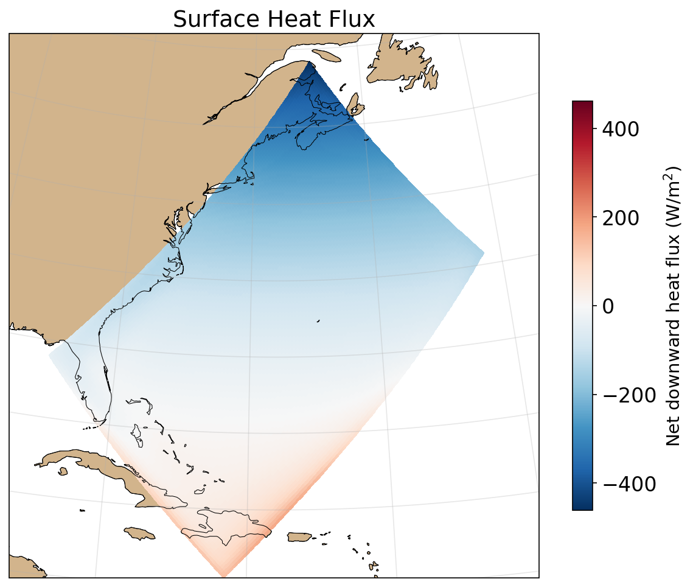
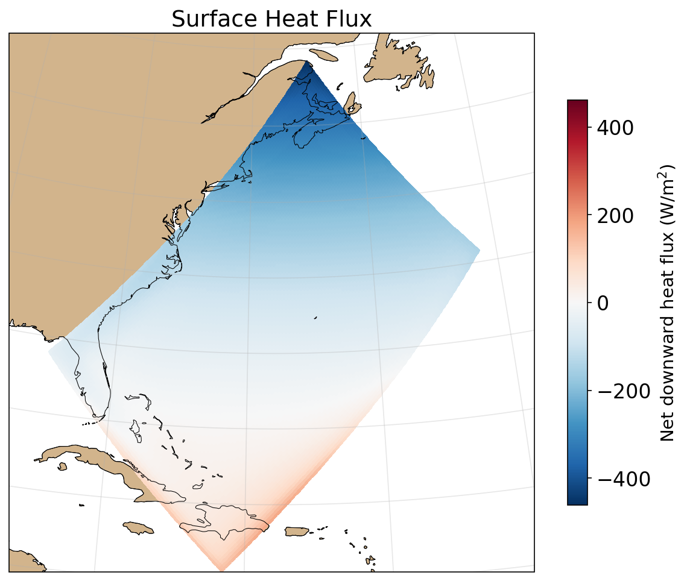

Claude vs. Nemo
I want to run the NEMO ocean model Gyre configuration which is defined in the main NEMO repo. Let's plan this out.
Multiple Claude Code sessions across three days — February 2026
The Goal
Stand up a NEMO ocean model simulation from scratch:
- Dockerized build of a large Fortran codebase
- Idealized double-gyre configuration (mid-latitude Atlantic analog)
- Automated analysis pipeline with Jupyter notebooks
- Shared analysis library with proper grid handling
- HPC deployment via Singularity for decade-scale runs
The kind of project that normally involves reading documentation, trial-and-error compilation, and a lot of plumbing — done here as a conversation.
Getting It Running
Don't go too far without talking to me.
Challenging the AI's Assumptions
Defer XIOS until we notice we need it.
Claude claimed XIOS (an external I/O server) was a hard dependency. The user knew better:
I think that's not accurate. Review IO again. There should be
a way to write _{T,U,V,W} files without XIOS.
Investigation proved the user right — a bundled library (IOIPSL) handles output natively. This eliminated an entire build stage and a major source of complexity.
Plan-Driven Workflow
Plans go to plans dir and are written as markdown files.
Review the plan and find out if we need to adapt the analysis stage.
Commit updated plan and then act on stage 03.
Numbered milestones in plans/ gave the AI a shared roadmap
and the user a way to steer without micromanaging.
nemo/ # NEMO source (git submodule, read-only)
configs/GYRE_DOCKER/ # NEMO config (CPP keys, namelist, MY_SRC)
plans/ # Milestone docs (markdown)
analysis/*.ipynb # Jupyter notebooks
Makefile # make build → run → analyzeKey constraint: nemo/ is a submodule — we can read it
but must not modify it.
Proactive Review
Should we track the workflow in a Makefile right away?
Check if (looking forward) we might be running into problems with current structure.
Before moving on, the user asked Claude to audit the setup.
Four issues surfaced: missing .dockerignore, hardcoded x86_64 paths
(would break on ARM Mac), error-swallowing || true, and poor
Docker layer ordering.
All fixed before they could cause problems downstream.
The Debugging Loop
Building and running NEMO in Docker required several rounds of fix-and-retry — typical for deploying Fortran codes in containers:
- Build:
makenemo -j12fails — needs-j 4(space-separated); missingliburi-perlin the container - Runtime: Fortran format overflow — Docker container IDs too long
for NEMO's hostname field. Fixed with
--hostname nemo - Dependencies: Biogeochemistry module (PISCES) pulling in external forcing files that don't exist in a clean setup
The AI traced each error and applied targeted fixes. The user made the architectural call:
What's the PISCES part in our simulation? Should we erase it completely?
Drop it. RENAME TO GYRE.
Analysis
Let's use Jupyter notebooks instead of .py files. Literate programming is easier to investigate by humans.
Add analyses: surface heat flux, total heat content time series, total KE time series, mean salinity time series (should be constant), wind stress quiver.
Steering the Analysis
Put the plots on a regional map with cartopy. Use stereographic projection, add coastlines. Don't worry that the rect box doesn't fit the coastlines. We want to see its approx position on the globe and its shape in relation to the real Atlantic basin.
The user specified format, projection, and physics; Claude created the notebooks, checked variable names, and wired up the Makefile.
 

Plausible but Wrong
Are you sure about the wind stress and current directions? They are in delx, dely direction, I think.
Claude plotted vectors as if grid-aligned = geographic. But the GYRE grid is rotated 45° — every vector was wrong.

The user caught it from domain knowledge. The AI would have shipped this.
Scaling Up
Let's increase the spatial resolution to 1/5 deg. Git branch first.
Might want to go for a really short run first?
Resolution and Parallelization
Grid: 32×22 → 160×110. Claude derived all dependent parameters (timestep, diffusion, output frequency) from scaling arguments. 10-step smoke test, then 5-minute run, then full simulation.
Can we use OpenMP for shared memory?
Claude investigated: NEMO has zero OpenMP directives — parallelism is purely MPI. Switched to 4 ranks. 2.6× speedup (0.10 → 0.039 s/step).
Correctness & Code Quality
Look at outputs (esp plots) and tune them. There's a few obvious issues.
Physical Correctness
Ensure NEMO grid is respected for aggregations.
Domain means used flat .mean() — no area weighting, no
land mask. On NEMO's rotated grid with varying cell sizes, this silently
biased every spatial aggregate.
The fix: .weighted(cell_area * interior).mean(), zonal means
weighted by e1t, proper boundary exclusion.
Other catches by the user: Docker --cpus is a quota not a
core-pinning flag (800% CPU observed); boundary ring included in averages.
Code Quality
Ensure proper xarray API is used rather than sending around np arrays.
Don't hide the output dir in the lib. Really bad pattern.
Notebooks extracted .values immediately, discarding
xarray's coordinate-aware operations. Claude refactored to use
.where(), .weighted(), .isel().
Duplicated boilerplate extracted into analysis/gyre.py
(9 functions). Setup cells shrank from ~30 to ~5 lines.
The user required: mandatory parameters (no hidden defaults), type hints, proper markdown documentation in every notebook.
Calendar Fix
Where's a good place to fix the calendar? I don't want this repeated in every notebook.
IOIPSL writes 360d but CF conventions require 360_day.
Hardcoded in NEMO's domain.F90 — can't fix without patching the submodule.
Solution: a one-liner in the Makefile post-processes the NetCDF attributes
after rebuild_nemo. Fixed once, all notebooks benefit.
Literature Research
There's a 2010 Levy paper defining the GYRE. And there's a 2023(±2y) paper by Bagaeva who set up a GYRE with FESOM. Read these papers and summarize params of the 20 km configs.
Navigating Paywalls
Both papers were behind paywalls. Claude tried DOI redirects, ResearchGate, preprint archives, user-agent spoofing — all blocked.
Can't you parse PDF?
The user provided a local Zotero path. Claude installed
pdfminer-six and extracted the text. Also pulled Levy's
parameters directly from the NEMO Fortran source
(usrdef_nam.F90, usrdef_sbc.F90).
Configuration Comparison
What about runtimes, ignored spinup, diags used and plotted?
| Levy 2010 | Bagaeva 2024 | GYRE_DOCKER | |
|---|---|---|---|
| Model | NEMO | FESOM | NEMO |
| Resolution | 1/5° | ~20 km | 1/5° |
| Runtime | 100 yr (70 spinup) | 59 yr | 10 yr (so far) |
| Diagnostics | SSH, SST, ψ | SSH, SST, KE | SSH, SST, KE, fluxes |
Decade-scale runs are the entry point for meaningful ocean dynamics — hence the HPC deployment.
HPC Deployment
I'd like to run this big run on an HPC centre. Plan this out with minimal interaction with me (I'm busy otherwise.)
The Pipeline
Give me list of commands (c/p able) that I need to run on nesh. I just logged in.
Local Mac (ARM) → NESH cluster (x86, SLURM, Singularity):
# Local: cross-build and push to GitHub Container Registry
make push # docker buildx --platform linux/amd64 --push
# NESH: pull as Singularity image and run
singularity pull nemo-gyre.sif docker://ghcr.io/...
NEMO_ITEND=108000 sbatch hpc/job.sh # 10-year runFirst push failed: gh auth token lacked
write:packages scope. Build layers cached — second push took 11 seconds.
Four Rounds of Remote Debugging
Do we need to bind the host MPI for single node execution?
No — container MPI works fine for single-node. The user caught this before it became a problem. Then: run on NESH, paste errors back, Claude diagnoses without cluster access:
| # | Error | Root cause |
|---|---|---|
| 1 | /var/spool/slurmd/nemo-gyre.sif |
SLURM copies scripts to spool — use $SLURM_SUBMIT_DIR |
| 2 | /scratch: Read-only |
Container MPI needs OMPI_MCA_orte_tmpdir_base=/tmp |
| 3 | unable to execute /opt/nemo-run/nemo |
Bind mount hides symlink — use absolute executable path |
| 4 | calendar '360d' |
Same IOIPSL fix needed in job script |
Plus: no host MPI needed for single-node (user caught this);
$HOME quota avoidance; gitignore trailing-slash vs symlink.
10-Year Run
So go for 10 years. Make sure the output symlinking doesn't fail if output symlink exists.
After the fixes, the 1-year test run completed on NESH.
make analyze ran the notebooks against the HPC output.
Then: NEMO_ITEND=108000 sbatch hpc/job.sh —
a 10-year simulation, ~2.5 hours on a single NESH node.
Let's use a repo-local singularity cache dir and just ignore it.
Practical decisions made in passing: cache placement,
gitignore updates, output symlink handling — each a one-liner
from the user, resolved immediately.
Observations
I think that's not accurate.
Are you sure about the wind stress and current directions?
Don't hide the output dir in the lib. Really bad pattern.
Efficient Communication
Add savefig calls, subset the quiver, extend run, then make all.
One prompt, four changes. Full pipeline ran end to end.
OK. Then let's go for a 1-year run. Adapt namelist, runmake clean,make all. No interventions allowed.
Once a shared understanding was established, complex multi-step instructions could be given in a single sentence. The plan-driven workflow paid off — both sides knew the vocabulary.
Enforcing Conventions
Let's figure out how we deal with the fact that we cannot mod
the nemo/ contents directly.
Claude had edited inside the read-only nemo/ submodule.
The user flagged it; solution was an external config directory
(configs/GYRE_DOCKER/) built via makenemo -t.
The AI treated the submodule as just another directory. Repo structure conventions needed to be explicitly enforced — the AI didn't infer them from context.
The Pattern
| Human | AI | |
|---|---|---|
| Strengths | Domain knowledge, architectural judgment, API design instincts, quality review |
Source navigation, mechanical iteration, cross-platform plumbing, debugging cascades |
| Examples | XIOS is optional; vectors need rotation; area weighting required; no hidden defaults; host MPI unnecessary for single-node; Docker CPU quota ≠ core pinning |
Finding IOIPSL in Fortran source; refactoring 5 notebooks + shared library; cross-building amd64 image via QEMU; diagnosing 4 SLURM failures from error logs |
Not a replacement for expertise, but a multiplier for it.
Caveats: context limits hit repeatedly; the AI confidently stated incorrect facts and produced plausible but wrong output; API design and repo conventions needed explicit enforcement.